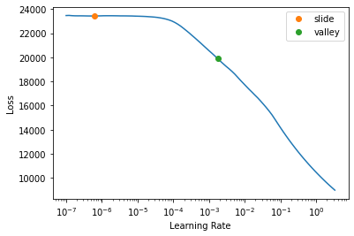

Show code
! [ -e /content ] && pip install -Uqq fastbook kaggle waterfallcharts treeinterpreter dtreeviz holidays
import fastbook
fastbook.setup_book()
I completed part 1 of Jeremy Howard’s course Practical Deep Learning for Coders. To practice what I learned about modeling tabular data, I competed in a recent time series forecasting competition on Kaggle.
Enefit, one of the largest energy companies in the Baltic region, challenged competitors to create an energy prediction model of Estonian clients that have installed solar panels. Because these “prosumers” both produce and consume energy, they disproportionately create energy imbalance, where expected consumption doesn’t match actual consumption. For Enefit, the result is inefficiency, higher operational costs, and grid instability. Since prosumers are a rapidly increasing share of energy clients, reliable energy predictions are critical.
Specifically, our prediction target is the amount produced or consumed by a prosumer given recent records of actual targets, installed capacity, weather data, and relevant energy prices. A standard modeling process would entail an in-depth exploratory analysis followed by building a model. Instead, Jeremy recommends to:
build a model early on that is easy to train and interpret, like a decision tree;
use the model to better understand the data, i.e. identify data issues, find out what’s hard, what features are the strongest predictors, how they vary with the target, etc;
iterate rapidly to improve the data and the model.
In this post, I’ll walk through these steps for my solution. But first, let’s define a validation set.
! [ -e /content ] && pip install -Uqq fastbook kaggle waterfallcharts treeinterpreter dtreeviz holidays
import fastbook
fastbook.setup_book()from fastbook import *
from pandas.api.types import is_string_dtype, is_numeric_dtype, is_categorical_dtype
from fastai.tabular.all import *
from sklearn.tree import DecisionTreeRegressor
from sklearn.ensemble import RandomForestRegressor
from dtreeviz.trees import *
from IPython.display import Image, display_svg, SVG
import holidays
import gc
pd.options.display.max_rows = 20
pd.options.display.max_columns = 10
import warnings
warnings.simplefilter('ignore', FutureWarning)
warnings.simplefilter('ignore', RuntimeWarning)
warnings.simplefilter('ignore', UserWarning)The released data covers September 1, 2021 to May 29, 2023. During the evaluation period, the models are re-scored 3 times as new data is collected: over February 2024, March 2024, and finally April 2024.
An effective validation set should resemble the test data, which is what the model is ultimately scored on. Since our goal is to forecast, the test data will be more recent than the released data. It’s also given that new prosumers can appear or disappear each successive scoring period. Therefore, not only must the validation data be more recent than the training data, it must also include prosumers that are not in the training data.
For my final solution, I performed 3-fold cross validation using progressively larger training sets and 1 month validation sets that aligned with the scoring periods: February 2023, March 2023, and April 2023. Each round, I dropped a random set of prosumers from the training set among those common to training and validation just after the split, which made the validation ones new from the model’s point of view. In subsequent rounds, I included the validation month from the previous round in the training set. I then averaged the errors over the three rounds to get a cross validation score. I held out May 2023 as my test set. This is summarized below:
| Round | Train | Valid |
|---|---|---|
| 1 | Sept 2021 - Jan 2023 | Feb 2023 |
| 2 | Sept 2021 - Feb 2023 | Mar 2023 |
| 3 | Sept 2021 - Mar 2023 | Apr 2023 |
| Test | Sept 2021 - Apr 2023 | May 2023 |
I used Round 1’s scheme during my development process. Let’s look at the data available at forecast time next.
URLs.LOCAL_PATH = Path('/notebooks/kaggle/enefit')
path = URLs.LOCAL_PATH/'predict-energy-behavior-of-prosumers'
# prosumer details
test_df = pd.read_csv(path/'example_test_files'/'test.csv', low_memory=False)
revealed_targets_df = pd.read_csv(path/'example_test_files'/'revealed_targets.csv', low_memory=False)
t_client_df = pd.read_csv(path/'example_test_files'/'client.csv', low_memory=False)
# weather tables
t_forecast_df = pd.read_csv(path/'example_test_files'/'forecast_weather.csv', low_memory=False)
t_historical_df = pd.read_csv(path/'example_test_files'/'historical_weather.csv', low_memory=False)
# relevant energy prices
t_electricity_df = pd.read_csv(path/'example_test_files'/'electricity_prices.csv', low_memory=False)
t_gas_df = pd.read_csv(path/'example_test_files'/'gas_prices.csv', low_memory=False)
# location
weather_station_to_county_mapping_df = pd.read_csv(path/'weather_station_to_county_mapping.csv', low_memory=False)t_dfs = [test_df, revealed_targets_df, t_client_df, t_forecast_df, t_historical_df, t_electricity_df, t_gas_df, weather_station_to_county_mapping_df]
t_df_names = ['test', 'revealed_targets', 'client', 'forecast_weather', 'historical_weather', 'electricity_prices', 'gas_prices', 'weather_station_to_county_mapping']Below is an overview of the columns containing prosumer details:
{k:v.columns for (k,v) in zip(t_df_names[:3], t_dfs[:3])}{'test': Index(['county', 'is_business', 'product_type', 'is_consumption',
'prediction_datetime', 'data_block_id', 'row_id', 'prediction_unit_id',
'currently_scored'],
dtype='object'),
'revealed_targets': Index(['county', 'is_business', 'product_type', 'target', 'is_consumption',
'datetime', 'data_block_id', 'row_id', 'prediction_unit_id'],
dtype='object'),
'client': Index(['product_type', 'county', 'eic_count', 'installed_capacity',
'is_business', 'date', 'data_block_id'],
dtype='object')}The key fields in test are:
county: an ID for the countyis_business: a boolean for whether the prosumer is a businessproduct_type: an ID for the energy contract type, which maps as {0: "Combined", 1: "Fixed", 2: "General service", 3: "Spot"}is_consumption: a boolean for whether the prediction is for consumption or productionprediction_datetime: in Estonian time in EET (UTC+2) EEST (UTC+3), the start of the 1-hour period for which the target is to be forecastprediction_unit_id: an ID for the prosumer “segment”, i.e. the combination of county, is_business, and product_type, that Enefit uses to define each prosumer.data_block_id: an ID that indicates when the data is available.This competition uses a time series API that ensures the model sees only data that would actually be available for each forecast. According to the data dictionary, the data_block_id column is present in all tables and indicates the available data; rows with the same data_block_id participate in the same forecast.
The API gets these rows across all tables and serves them as a group (a data block). Once a forecast is made, the process is repeated for the next data_block_id. We are also allowed to store incoming data for the current forecast and use it in future forecasts as lagged features.
All forecasts are made at 11am each day for each hour (12am-11pm) the next day. For example, let’s say today is 2023-05-30. At 11am today, the API gets rows from:
test: tomorrow’s datetimes (2023-05-31 00:00:00 to 2023-05-31 23:00:00). This is the current forecast horizon.test_df[test_df['data_block_id'] == 637].head(3)| county | is_business | product_type | is_consumption | prediction_datetime | data_block_id | row_id | prediction_unit_id | currently_scored | |
|---|---|---|---|---|---|---|---|---|---|
| 9360 | 0 | 0 | 1 | 0 | 2023-05-31 00:00:00 | 637 | 2015232 | 0 | False |
| 9361 | 0 | 0 | 1 | 1 | 2023-05-31 00:00:00 | 637 | 2015233 | 0 | False |
| 9362 | 0 | 0 | 2 | 0 | 2023-05-31 00:00:00 | 637 | 2015234 | 1 | False |
revealed_targets: yesterday’s actual targets (2023-05-29 00:00:00 to 2023-05-29 23:00:00). These datetimes lag 2 days behind the forecast horizon.revealed_targets_df[revealed_targets_df['data_block_id'] == 637].head(3)| county | is_business | product_type | target | is_consumption | datetime | data_block_id | row_id | prediction_unit_id | |
|---|---|---|---|---|---|---|---|---|---|
| 9456 | 0 | 0 | 1 | 2.073 | 0 | 2023-05-29 00:00:00 | 637 | 2008992 | 0 |
| 9457 | 0 | 0 | 1 | 503.735 | 1 | 2023-05-29 00:00:00 | 637 | 2008993 | 0 |
| 9458 | 0 | 0 | 2 | 0.000 | 0 | 2023-05-29 00:00:00 | 637 | 2008994 | 1 |
client: yesterday’s records of installed capacity (2023-05-29). These dates lag 2 days behind the forecast horizon.t_client_df[t_client_df['data_block_id'] == 637].head(3)| product_type | county | eic_count | installed_capacity | is_business | date | data_block_id | |
|---|---|---|---|---|---|---|---|
| 197 | 1 | 0 | 508 | 4964.215 | 0 | 2023-05-29 | 637 |
| 198 | 2 | 0 | 10 | 31.000 | 0 | 2023-05-29 | 637 |
| 199 | 3 | 0 | 1515 | 15963.060 | 0 | 2023-05-29 | 637 |
forecast_weather: forecasted weather applicable from 3am today to 2am the day after tomorrow (2023-05-30 3:00:00 to 2023-06-01 2:00:00) at the given coordinates. These datetimes include the current forecast horizon.t_forecast_df[t_forecast_df['data_block_id'] == 637].head(3)| latitude | longitude | origin_datetime | hours_ahead | temperature | ... | forecast_datetime | direct_solar_radiation | surface_solar_radiation_downwards | snowfall | total_precipitation | |
|---|---|---|---|---|---|---|---|---|---|---|---|
| 16128 | 57.6 | 21.7 | 2023-05-30 02:00:00 | 1 | 10.190088 | ... | 2023-05-30 03:00:00 | 0.0 | 0.0 | 0.0 | 0.0 |
| 16129 | 57.6 | 22.2 | 2023-05-30 02:00:00 | 1 | 6.493555 | ... | 2023-05-30 03:00:00 | 0.0 | 0.0 | 0.0 | 0.0 |
| 16130 | 57.6 | 22.7 | 2023-05-30 02:00:00 | 1 | 10.304346 | ... | 2023-05-30 03:00:00 | 0.0 | 0.0 | 0.0 | 0.0 |
3 rows × 18 columns
historical_weather: historical weather from 11am yesterday to 1 hour ago (2023-05-29 11:00:00 to 2023-05-30 10:00:00) at the given weather station coordinates. These datetimes lag at least 1 day behind the forecast horizon.t_historical_df[t_historical_df['data_block_id'] == 637].head(3)| datetime | temperature | dewpoint | rain | snowfall | ... | direct_solar_radiation | diffuse_radiation | latitude | longitude | data_block_id | |
|---|---|---|---|---|---|---|---|---|---|---|---|
| 8064 | 2023-05-29 11:00:00 | 15.0 | 10.0 | 0.0 | 0.0 | ... | 489.0 | 129.0 | 57.6 | 21.7 | 637.0 |
| 8065 | 2023-05-29 11:00:00 | 14.7 | 9.4 | 0.0 | 0.0 | ... | 456.0 | 161.0 | 57.6 | 22.2 | 637.0 |
| 8066 | 2023-05-29 11:00:00 | 14.3 | 9.8 | 0.0 | 0.0 | ... | 408.0 | 197.0 | 57.6 | 22.7 | 637.0 |
3 rows × 18 columns
electricity_prices: day-ahead electricity prices obtained yesterday, but applicable 12am-11pm today (2023-05-30 00:00:00 to 2023-05-30 23:00:00). These datetimes lag 1 day behind the forecast horizon.t_electricity_df[t_electricity_df['data_block_id'] == 637].head(3)| forecast_date | euros_per_mwh | origin_date | data_block_id | |
|---|---|---|---|---|
| 72 | 2023-05-30 00:00:00 | 8.57 | 2023-05-29 00:00:00 | 637 |
| 73 | 2023-05-30 01:00:00 | 8.06 | 2023-05-29 01:00:00 | 637 |
| 74 | 2023-05-30 02:00:00 | 9.04 | 2023-05-29 02:00:00 | 637 |
gas_prices: day-ahead gas prices obtained yesterday, but applicable today (2023-05-30). These dates lag 1 day behind the forecast horizon.t_gas_df[t_gas_df['data_block_id'] == 637].head(3)| forecast_date | lowest_price_per_mwh | highest_price_per_mwh | origin_date | data_block_id | |
|---|---|---|---|---|---|
| 3 | 2023-05-30 | 29.0 | 34.0 | 2023-05-29 | 637 |
Next, we’ll see how to merge this data.
Since test contains the segments and the datetimes for which we are making forecasts, we want to keep all of the records in test and add matching records from the other tables to it. A left join will achieve this.
Here are the date ranges in our example data block:
date_col_names = ['prediction_datetime', 'datetime', 'date', 'forecast_datetime', 'datetime', 'forecast_date', 'forecast_date']
date_cols = [df.loc[df['data_block_id'] == 637, date_col_names[i]] for i,df in enumerate(t_dfs[:-1])]
date_ranges = [(t_df_names[i], date_cols[i].min(), date_cols[i].max()) for i,df in enumerate(t_dfs[:-1])]
date_ranges[('test', '2023-05-31 00:00:00', '2023-05-31 23:00:00'),
('revealed_targets', '2023-05-29 00:00:00', '2023-05-29 23:00:00'),
('client', '2023-05-29', '2023-05-29'),
('forecast_weather', '2023-05-30 03:00:00', '2023-06-01 02:00:00'),
('historical_weather', '2023-05-29 11:00:00', '2023-05-30 10:00:00'),
('electricity_prices', '2023-05-30 00:00:00', '2023-05-30 23:00:00'),
('gas_prices', '2023-05-30', '2023-05-30')]We can visualize them in the figure below. To align revealed_targets, client, historical_weather, electricity_prices, and gas_prices, we simply add back how much the respective datetimes lag those in test using a timedelta, effectively moving them up as lagged features. Note that we’ll have historical_weather from 12am-10am only as a result, shown in yellow.
forecast_weather includes all of test’s datetimes, so we’ll just filter them by the hours_ahead column (meaning hours ahead of the forecast origin), i.e. hours ahead >= 22 and <= 45, shown in green.
With the datetimes aligned, all but the weather tables are ready to be merged.
Both weather tables include latitude/longitude coordinates, but not a county ID as in test. Fortunately, we’re provided a weather_station_to_county_mapping table to do just that:
weather_station_to_county_mapping_df[~weather_station_to_county_mapping_df['county'].isna()].head()| county_name | longitude | latitude | county | |
|---|---|---|---|---|
| 10 | Saaremaa | 22.2 | 58.2 | 10.0 |
| 11 | Saaremaa | 22.2 | 58.5 | 10.0 |
| 19 | Saaremaa | 22.7 | 58.5 | 10.0 |
| 20 | Hiiumaa | 22.7 | 58.8 | 1.0 |
| 27 | Saaremaa | 23.2 | 58.5 | 10.0 |
We’ll left join weather_station_to_county_mapping onto the weather tables on latitude/longitude to add a county ID.
Note that there are multiple weather readings for each county ID. Here are a few examples from the forecast_weather table:
t_forecast_df = t_forecast_df.merge(weather_station_to_county_mapping_df, on=['latitude', 'longitude'], how='left')
t_forecast_df[~t_forecast_df['county'].isna()][['county', 'forecast_datetime']].head()| county | forecast_datetime | |
|---|---|---|
| 10 | 15.0 | 2023-05-27 03:00:00 |
| 11 | 15.0 | 2023-05-27 03:00:00 |
| 23 | 13.0 | 2023-05-27 03:00:00 |
| 24 | 15.0 | 2023-05-27 03:00:00 |
| 25 | 15.0 | 2023-05-27 03:00:00 |
And from the historical_weather table:
t_historical_df = t_historical_df.merge(weather_station_to_county_mapping_df, on=['latitude', 'longitude'], how='left')
t_historical_df[~t_historical_df['county'].isna()][['county', 'datetime']].head()| county | datetime | |
|---|---|---|
| 10 | 15.0 | 2023-05-26 11:00:00 |
| 11 | 15.0 | 2023-05-26 11:00:00 |
| 23 | 13.0 | 2023-05-26 11:00:00 |
| 24 | 15.0 | 2023-05-26 11:00:00 |
| 25 | 15.0 | 2023-05-26 11:00:00 |
We’ll need to do a groupby operation to summarize the readings for the same county at the same datetime.
I did the following groupbys on the dates and on the counties:
date: mean and standard deviation over all counties (and hence all weather stations in each county) at each unique datetime
local: mean and standard deviation over all weather stations in an individual county at each unique datetime, i.e. mean/std of county n at datetime d.
Now that we know how we’ll merge the tables, let’s look at the training set and clean the data.
segment = ['county', 'is_business', 'product_type']
data_cols = segment + ['is_consumption', 'datetime', 'row_id', 'target']
client_cols = segment + ['eic_count', 'installed_capacity', 'date']
forecast_cols = ['latitude', 'longitude', 'hours_ahead',
'temperature', 'dewpoint', 'cloudcover_high', 'cloudcover_low',
'cloudcover_mid', 'cloudcover_total', '10_metre_u_wind_component',
'10_metre_v_wind_component', 'forecast_datetime',
'direct_solar_radiation', 'surface_solar_radiation_downwards',
'snowfall', 'total_precipitation']
historical_cols = ['datetime', 'temperature', 'dewpoint', 'rain', 'snowfall',
'surface_pressure', 'cloudcover_total', 'cloudcover_low',
'cloudcover_mid', 'cloudcover_high', 'windspeed_10m',
'winddirection_10m', 'shortwave_radiation', 'direct_solar_radiation',
'diffuse_radiation', 'latitude', 'longitude']
electricity_cols = ['forecast_date', 'euros_per_mwh']
gas_cols = ['forecast_date', 'lowest_price_per_mwh', 'highest_price_per_mwh']
location_cols = ['longitude', 'latitude', 'county']
# prosumer details
train_df = pd.read_csv(path/'train.csv', usecols=data_cols, low_memory=False)
client_df = pd.read_csv(path/'client.csv', usecols=client_cols, low_memory=False)
# weather
forecast_df = pd.read_csv(path/'forecast_weather.csv', usecols=forecast_cols, low_memory=False)
historical_df = pd.read_csv(path/'historical_weather.csv', usecols=historical_cols, low_memory=False)
# energy prices
electricity_df = pd.read_csv(path/'electricity_prices.csv', usecols=electricity_cols, low_memory=False)
gas_df = pd.read_csv(path/'gas_prices.csv', usecols=gas_cols, low_memory=False)
# location
weather_station_to_county_mapping_df = pd.read_csv(path/'weather_station_to_county_mapping.csv', usecols=location_cols, low_memory=False)
county_id_to_name_map_df = pd.read_json(path/'county_id_to_name_map.json', orient='index')dfs = [train_df, client_df, forecast_df, historical_df, electricity_df, gas_df]
df_names = ['train', 'client', 'forecast_weather', 'historical_weather', 'electricity_prices', 'gas_prices']Here are the table shapes:
{k:v.shape for (k,v) in zip(df_names, dfs)}{'train': (2018352, 7),
'client': (41919, 6),
'forecast_weather': (3424512, 16),
'historical_weather': (1710802, 17),
'electricity_prices': (15286, 2),
'gas_prices': (637, 3)}We can expect our merged and cleaned result to have about 2 million rows.
Here are the columns and their data types:
{k:dict(v.dtypes) for (k,v) in zip(df_names, dfs)}{'train': {'county': dtype('int64'),
'is_business': dtype('int64'),
'product_type': dtype('int64'),
'target': dtype('float64'),
'is_consumption': dtype('int64'),
'datetime': dtype('O'),
'row_id': dtype('int64')},
'client': {'product_type': dtype('int64'),
'county': dtype('int64'),
'eic_count': dtype('int64'),
'installed_capacity': dtype('float64'),
'is_business': dtype('int64'),
'date': dtype('O')},
'forecast_weather': {'latitude': dtype('float64'),
'longitude': dtype('float64'),
'hours_ahead': dtype('int64'),
'temperature': dtype('float64'),
'dewpoint': dtype('float64'),
'cloudcover_high': dtype('float64'),
'cloudcover_low': dtype('float64'),
'cloudcover_mid': dtype('float64'),
'cloudcover_total': dtype('float64'),
'10_metre_u_wind_component': dtype('float64'),
'10_metre_v_wind_component': dtype('float64'),
'forecast_datetime': dtype('O'),
'direct_solar_radiation': dtype('float64'),
'surface_solar_radiation_downwards': dtype('float64'),
'snowfall': dtype('float64'),
'total_precipitation': dtype('float64')},
'historical_weather': {'datetime': dtype('O'),
'temperature': dtype('float64'),
'dewpoint': dtype('float64'),
'rain': dtype('float64'),
'snowfall': dtype('float64'),
'surface_pressure': dtype('float64'),
'cloudcover_total': dtype('int64'),
'cloudcover_low': dtype('int64'),
'cloudcover_mid': dtype('int64'),
'cloudcover_high': dtype('int64'),
'windspeed_10m': dtype('float64'),
'winddirection_10m': dtype('int64'),
'shortwave_radiation': dtype('float64'),
'direct_solar_radiation': dtype('float64'),
'diffuse_radiation': dtype('float64'),
'latitude': dtype('float64'),
'longitude': dtype('float64')},
'electricity_prices': {'forecast_date': dtype('O'),
'euros_per_mwh': dtype('float64')},
'gas_prices': {'forecast_date': dtype('O'),
'lowest_price_per_mwh': dtype('float64'),
'highest_price_per_mwh': dtype('float64')}}The date columns are currently all stored as Python objects:
date_cols = ['datetime', 'date', 'forecast_datetime', 'datetime', 'forecast_date', 'forecast_date']
[(date_cols[i], df[date_cols[i]].dtype) for i,df in enumerate(dfs)][('datetime', dtype('O')),
('date', dtype('O')),
('forecast_datetime', dtype('O')),
('datetime', dtype('O')),
('forecast_date', dtype('O')),
('forecast_date', dtype('O'))]We’ll cast them as a datetime type and check the result:
def to_datetime(df:pd.DataFrame, date_col:pd.Series):
"""
casts date_col in df as datetime type
"""
df[date_col] = pd.to_datetime(df[date_col])
return df
# cast
[to_datetime(df, date_cols[i]) for i,df in enumerate(dfs)]
# check
[(date_cols[i], df[date_cols[i]].dtype) for i,df in enumerate(dfs)][('datetime', dtype('<M8[ns]')),
('date', dtype('<M8[ns]')),
('forecast_datetime', dtype('<M8[ns]')),
('datetime', dtype('<M8[ns]')),
('forecast_date', dtype('<M8[ns]')),
('forecast_date', dtype('<M8[ns]'))]Let’s check for missing values:
def get_columns_with_missing_values(df):
# columns with missing values
cols = list(df.columns[df.isna().sum() > 0])
null_counts = [df[col].isna().sum() for col in cols]
return list(zip(cols, null_counts))
dict(zip(df_names, [get_columns_with_missing_values(df) for df in dfs])){'train': [('target', 528)],
'client': [],
'forecast_weather': [('surface_solar_radiation_downwards', 2)],
'historical_weather': [],
'electricity_prices': [],
'gas_prices': []}There are 528 missing targets, which are few enough to drop. We’ll later fill otherwise missing values with the column modes.
train contains current targets (the ground truth labels) unlike test. At forecast time, we’ll have 2-day old targets available in revealed_targets. We will construct these 48h lagged targets in later iterations when we do more extensive feature engineering.
Next we’ll look for highly skewed columns, particularly those distributed with a long tail to the right. While decision trees can handle these just fine, they can pose problems for models that multiply the input data by a coefficient, like a neural network. This is because the infrequently occurring large numbers can dominate the result.
def get_skewed_cols(df:pd.DataFrame):
df_skew = pd.DataFrame(df.skew(), columns=['skew'])
skewed_cols = list(df_skew[np.abs(df_skew['skew']) >= 0.75].index)
return skewed_cols
# look at the skewed columns first b/c could include columns you don't want to log-scale, e.g. segment cols, target.
dict(zip(df_names, [get_skewed_cols(df) for df in dfs])){'train': ['target'],
'client': ['eic_count', 'installed_capacity'],
'forecast_weather': ['direct_solar_radiation',
'surface_solar_radiation_downwards',
'snowfall',
'total_precipitation'],
'historical_weather': ['rain',
'snowfall',
'windspeed_10m',
'shortwave_radiation',
'direct_solar_radiation',
'diffuse_radiation'],
'electricity_prices': ['euros_per_mwh'],
'gas_prices': ['lowest_price_per_mwh', 'highest_price_per_mwh']}We can visualize some with histograms. Here’s the target:
train_df['target'].hist()client_df['installed_capacity'].hist()Among the columns we found, we’ll log scale all but the target to squish the large numbers and reduce the skew:
skewed_cols = [
['eic_count', 'installed_capacity'],
['direct_solar_radiation', 'surface_solar_radiation_downwards', 'snowfall', 'total_precipitation'],
['rain', 'snowfall', 'windspeed_10m', 'shortwave_radiation', 'direct_solar_radiation', 'diffuse_radiation'],
['euros_per_mwh'],
['lowest_price_per_mwh', 'highest_price_per_mwh']
]def log_scale_df(df:pd.DataFrame, skewed_cols:list):
# add log scaled columns
for col in skewed_cols:
df[f"log_{col}"] = np.log(df[col]+1)
# drop the original skewed columns
df.drop(columns=skewed_cols, inplace=True)
return df
# not logging target
for i, (df, cols) in enumerate(zip(dfs[1:], skewed_cols)):
log_scale_df(df, cols)Here’s the result for installed_capacity:
client_df['log_installed_capacity'].hist()Now we’ll merge the tables:
def add_client_features(features_df, client_df):
# to align w/ forecast horizon, shift dates 2 days forward (equivalent to 48h lag)
client_df['date'] = client_df['date'] + pd.Timedelta(days=2)
# create date column in train_df to join on (will drop after)
features_df['date'] = pd.to_datetime(features_df['datetime'].dt.date)
# join
features_df = features_df.merge(client_df, how='left', on=['county', 'is_business', 'product_type', 'date'])
features_df.drop(columns=['date'], axis=1, inplace=True)
return features_df
def _reduce_float64(df):
float64_cols = df.select_dtypes(include=['float64']).columns.tolist()
for col in float64_cols:
df[col] = df[col].astype('float32')
return df
def add_forecast_weather_features(features_df, forecast_df, weather_station_to_county_mapping_df):
# setup
# rename forecast_datetime left-join w/ features_df on datetime
forecast_df.rename(columns={'forecast_datetime': 'datetime'}, inplace=True)
# to align w/ forecast horizon, filter by 22-45 hours ahead
forecast_df = forecast_df.loc[(forecast_df['hours_ahead'] >= 22) & (forecast_df['hours_ahead'] <= 45)].copy()
forecast_df.drop(columns=['hours_ahead'], axis=1, inplace=True)
# add county ID by merging w/ weather_station_to_county_mapping_df
forecast_df = forecast_df.merge(
weather_station_to_county_mapping_df, how='left', on=['longitude', 'latitude'])
# fill NaN counties w/ 12: code for 'Unknown' county according to county_id_to_name_map.json
forecast_df['county'] = forecast_df['county'].fillna(12).astype('int64')
# drop longitude, latitude
forecast_df.drop(columns=['longitude', 'latitude'], axis=1, inplace=True)
####### date stats: stats over all counties (and all weather stations in each county) on each unique datetime #######
# date - mean over all counties on each unique date. drop county b/c left-joining back on 'datetime' only
date_mean = forecast_df.groupby(['datetime'], as_index=False).mean()
date_mean.drop(columns=['county'], axis=1, inplace=True)
# std
date_std = forecast_df.groupby(['datetime'], as_index=False).std()
date_std.drop(columns=['county'], axis=1, inplace=True)
####### local stats: stats over a county on each unique datetime (mean of county N on date YY-MM-DD) #######
# filter where counties are known each time first and cast county as int to enable left-join
# mean
local_mean = forecast_df[~forecast_df['county'].isna()].groupby(['county', 'datetime'], as_index=False).mean()
local_mean['county'] = local_mean['county'].fillna(12).astype('int64')
# std
local_std = forecast_df[~forecast_df['county'].isna()].groupby(['county', 'datetime'], as_index=False).std()
local_std['county'] = local_std['county'].fillna(12).astype('int64')
##
# reduce memory usage of intermediate dfs by casting float64 as float32
[_reduce_float64(df) for df in [date_mean, date_std, local_mean, local_std]]
# join date stats
features_df = features_df.merge(date_mean, how='left', on=['datetime'])
features_df = features_df.merge(date_std, how='left', on=['datetime'], suffixes=("_mean_fd", "_std_fd"))
#print("debug - merged all date forecast stats")
# join local stats
features_df = features_df.merge(local_mean, how='left', on=['county', 'datetime'])
features_df = features_df.merge(local_std, how='left', on=['county', 'datetime'], suffixes=("_mean_fl", "_std_fl"))
#print("debug - merged all local forecast stats")
del date_mean, date_std, local_mean, local_std
gc.collect()
#print("debug - finished adding forecast weather features")
return features_df
def add_historical_weather_features(features_df, historical_df, weather_station_to_county_mapping_df):
## setup
# add county ID by merging w/ weather_station_to_county_mapping_df
historical_df = historical_df.merge(
weather_station_to_county_mapping_df, how='left', on=['longitude', 'latitude'])
# fill NaN counties w/ 12: code for Unknown county according to county_id_to_name_map.json
historical_df['county'] = historical_df['county'].fillna(12).astype('int64')
# drop longitude, latitude
historical_df.drop(columns=['longitude', 'latitude'], axis=1, inplace=True)
####### date stats: stats over all counties on each unique date #######
## base date stats. drop county b/c joining on 'datetime' only ##
# mean
date_mean = historical_df.groupby(['datetime'], as_index=False).mean()
date_mean.drop(columns=['county'], axis=1, inplace=True)
# std
date_std = historical_df.groupby(['datetime'], as_index=False).std()
date_std.drop(columns=['county'], axis=1, inplace=True)
####### local stats: stats over a county on each unique date (mean of county N on date YY-MM-DD) #######
## base local stats. to join on county, datetime: filter where counties are known each time first and cast county as int ##
# mean
local_mean = historical_df[~historical_df['county'].isna()].groupby(['county', 'datetime'], as_index=False).mean()
local_mean['county'] = local_mean['county'].fillna(12).astype('int64')
# std
local_std = historical_df[~historical_df['county'].isna()].groupby(['county', 'datetime'], as_index=False).std()
local_std['county'] = local_std['county'].fillna(12).astype('int64')
##
# cast float64 as float32 to reduce memory usage
[_reduce_float64(df) for df in [date_mean, date_std, local_mean, local_std]]
# join all date stats
features_df = features_df.merge(date_mean, how='left', on=['datetime'])
features_df = features_df.merge(date_std, how='left', on=['datetime'], suffixes=("_mean_hd", "_std_hd"))
# join all local stats
features_df = features_df.merge(local_mean, how='left', on=['county', 'datetime'])
features_df = features_df.merge(local_std, how='left', on=['county', 'datetime'], suffixes=('_mean_hl', '_std_hl'))
del date_mean, date_std, local_mean, local_std
gc.collect()
return features_df
def add_electricity_prices_features(features_df, electricity_df):
## setup
# rename forecast_date left-join w/ features_df on 'datetime'
electricity_df.rename(columns={'forecast_date': 'datetime'}, inplace=True)
# to align w/ forecast horizon, shift dates forward 1 day (equivalent to 24h lag)
electricity_df['datetime'] = electricity_df['datetime'] + pd.Timedelta(days=1)
##
# join
features_df = features_df.merge(electricity_df, how='left', on=['datetime'])
return features_df
def add_gas_prices_features(features_df, gas_df):
## setup:
# create date column in features_df to join on (will drop after)
features_df['date'] = pd.to_datetime(features_df['datetime'].dt.date)
# rename forecast_date in gas_df to join on
gas_df.rename(columns={'forecast_date': 'date'}, inplace=True)
# to align w/ forecast horizon, shift dates forward 1 day (equivalent to 24h lag)
gas_df['date'] = gas_df['date'] + pd.Timedelta(days=1)
##
# join
features_df = features_df.merge(gas_df, how='left', on=['date'])
# drop date
features_df.drop(columns=['date'], axis=1, inplace=True)
return features_dffeatures_df = add_client_features(train_df, client_df)
features_df = add_forecast_weather_features(features_df, forecast_df, weather_station_to_county_mapping_df)
features_df = add_historical_weather_features(features_df, historical_df, weather_station_to_county_mapping_df)
features_df = add_electricity_prices_features(features_df, electricity_df)
features_df = add_gas_prices_features(features_df, gas_df)At this stage, the only feature engineering we’ll do is enriching the representation of dates with metadata like DayofWeek/DayofMonth, is_month_start/end, is_weekend, is_holiday, etc; and capturing periodicity to distinguish hours of the same day or months of the same year.
def add_is_holiday_flag(features_df):
# supports years 2021-2026, up to 2 years past competition's approx forecast horizon--approx May 2024
estonian_holidays = holidays.country_holidays('EE', years=[2021, 2022, 2023, 2024, 2025, 2026])
features_df['is_holiday'] = [date in estonian_holidays for date in features_df['datetime'].dt.date]
return features_df
def add_is_weekend_flag(features_df):
"""
must call after calling add_datepart
add_datepart encodes Dayofweek as #'s b/w 0-6:
{0: monday, 1: tuesday ... 5: saturday, 6: sunday}
"""
weekends = [5, 6]
features_df['is_weekend'] = [day in weekends for day in features_df['datetimeDayofweek']]
return features_df
def add_date_features(features_df):
# add Year, Month, Week (of year), Day (of month), Dayof{week, year}, is_{start, end} of {month, quarter, year}
features_df = add_datepart(features_df, 'datetime', drop=False)
# add is_weekend flag
features_df = add_is_weekend_flag(features_df)
# add is_holiday flag
features_df = add_is_holiday_flag(features_df)
# capture orthogonal components (peaks/troughs vs phase shift) of Dayofyear, Hour
# helps distinguish different months in the same year, hours in the same day
# sin emphasizes vertical diplacement (peaks and troughs)
# cos emphasizes horizontal displacement (phase shift)
features_df['datetimeHour'] = features_df['datetime'].dt.hour
features_df['sin(datetimeDayofyear)'] = np.sin(np.pi * features_df['datetimeDayofyear'] / 183)
features_df['sin(datetimeHour)'] = np.sin(np.pi * features_df['datetimeHour'] / 12)
features_df['cos(datetimeDayofyear)'] = np.sin(np.pi * features_df['datetimeDayofyear'] / 183)
features_df['cos(datetimeHour)'] = np.sin(np.pi * features_df['datetimeHour'] / 12)
return features_dffeatures_df = add_date_features(features_df)
features_df.shape, features_df.columns((2018352, 136),
Index(['county', 'is_business', 'product_type', 'target', 'is_consumption',
'datetime', 'row_id', 'log_eic_count', 'log_installed_capacity',
'temperature_mean_fd',
...
'datetimeIs_year_end', 'datetimeIs_year_start', 'datetimeElapsed',
'is_weekend', 'is_holiday', 'datetimeHour', 'sin(datetimeDayofyear)',
'sin(datetimeHour)', 'cos(datetimeDayofyear)', 'cos(datetimeHour)'],
dtype='object', length=136))The dependent variable is target.
dep_var = 'target'As mentioned earlier, we’ll filter out rows with missing targets and fill otherwise missing values with the column modes.
features_df = features_df[features_df[dep_var].notnull()]
modes = features_df.mode().iloc[0].copy()
features_df.fillna(modes, inplace=True)Here’s the result:
get_columns_with_missing_values(df)[]features_df.head()| county | is_business | product_type | target | is_consumption | ... | datetimeHour | sin(datetimeDayofyear) | sin(datetimeHour) | cos(datetimeDayofyear) | cos(datetimeHour) | |
|---|---|---|---|---|---|---|---|---|---|---|---|
| 0 | 0 | 0 | 1 | 0.713 | 0 | ... | 0 | -0.866025 | 0.0 | -0.866025 | 0.0 |
| 1 | 0 | 0 | 1 | 96.590 | 1 | ... | 0 | -0.866025 | 0.0 | -0.866025 | 0.0 |
| 2 | 0 | 0 | 2 | 0.000 | 0 | ... | 0 | -0.866025 | 0.0 | -0.866025 | 0.0 |
| 3 | 0 | 0 | 2 | 17.314 | 1 | ... | 0 | -0.866025 | 0.0 | -0.866025 | 0.0 |
| 4 | 0 | 0 | 3 | 2.904 | 0 | ... | 0 | -0.866025 | 0.0 | -0.866025 | 0.0 |
5 rows × 136 columns
Excluding the target, 135 columns is a lot to study at once. As we go on, we’ll narrow our focus to the most influential ones.
Next we’ll split the data to use Sept 2021 - Jan 2023 for training and Feb 23 for validation. From the training set, we’ll drop a random set–and a random amount–of prosumers among those that are common to both training and validation just after splitting, making the validation ones new from the model’s point of view. We’ll indicate how many and which ones we drop with their prediction_unit_id’s (PIDs).
fastai’s TabularPandas class will handle splitting the data as well as encoding continuous and categorical variables.
from numpy import random
random.seed(42)
URLs.LOCAL_PATH = Path('/notebooks/kaggle/enefit')
save_path = URLs.LOCAL_PATH/'predict-energy-behavior-of-prosumers/pkl_files'
pid_lookup_df = load_pickle(save_path/'pid_lookup.pkl')
# includes dates of revealed_targets (2 days behind first eval day feb 1, 2023)
train_dates = {
'part': [pd.to_datetime('2022-11-01 00:00:00'), pd.to_datetime('2023-01-29 23:00:00')],
'full': [pd.to_datetime('2021-09-01 00:00:00'), pd.to_datetime('2023-01-29 23:00:00')]
}
eval_dates = {'feb23': [pd.to_datetime('2023-02-01 00:00:00'), pd.to_datetime('2023-02-28 23:00:00')],
'mar23': [pd.to_datetime('2023-03-01 00:00:00'), pd.to_datetime('2023-03-31 23:00:00')],
'apr23': [pd.to_datetime('2023-04-01 00:00:00'), pd.to_datetime('2023-04-30 23:00:00')],
'may23': [pd.to_datetime('2023-05-01 00:00:00'), pd.to_datetime('2023-05-31 23:00:00')]
}
def get_endpoints(is_partial, features_df, eval_month:str):
if is_partial:
train_dates_conds = [features_df['datetime'] == train_dates['part'][0],
features_df['datetime'] == train_dates['part'][1]
]
else:
train_dates_conds = [features_df['datetime'] == train_dates['full'][0],
features_df['datetime'] == train_dates['full'][1]
]
train_endpoints = [features_df['datetime'][train_dates_conds[0]].index[0],
features_df['datetime'][train_dates_conds[1]].index[-1]
]
valid_dates_cond = [features_df['datetime'] == eval_dates[eval_month][0],
features_df['datetime'] == eval_dates[eval_month][1]
]
valid_endpoints = [features_df['datetime'][valid_dates_cond[0]].index[0],
features_df['datetime'][valid_dates_cond[1]].index[-1]
]
return train_endpoints, valid_endpoints
def get_splits(is_partial, features_df, eval_month:str):
train_endpoints, valid_endpoints = get_endpoints(is_partial, features_df, eval_month)
train = features_df.iloc[train_endpoints[0]:train_endpoints[1]+1].index.tolist()
valid = features_df.iloc[valid_endpoints[0]:valid_endpoints[1]+1].index.tolist()
splits = (train, valid)
return splits
def drop_pids_from_train(features_df, splits, pid_lookup_df):
max_n_pids_to_drop = 7
training_pids = set(features_df.iloc[splits[0]].merge(pid_lookup_df, how='left', on=['row_id'])['prediction_unit_id'].unique().tolist())
valid_pids = set(features_df.iloc[splits[1]].merge(pid_lookup_df, how='left', on=['row_id'])['prediction_unit_id'].unique().tolist())
intersection_pids = list(training_pids.intersection(valid_pids))
# pids drop list may not be continuous or sorted.
intersection_pids.sort()
# drop from those not already missing in the valid fold, THIS ROUND.
# to get the number of pids to drop THIS ROUND, pick a random int b/w 1 and the max allowed to drop.
n_pids_drop = random.randint(1, max_n_pids_to_drop)
# to get the pids to drop, index intersection_pids w/ a random int b/w 0 and its last index. repeat for the n_pids_drop chosen for THIS ROUND.
pids_to_drop = [random.randint(0, len(intersection_pids)-1) for i in range(n_pids_drop)]
# drop only from train (slice features_df by training dates from the endpoints, join to lookup pids, mask, apply the mask to the slice)
# get its indices
mask = features_df.iloc[splits[0]].merge(pid_lookup_df, how='left', on=['row_id'])['prediction_unit_id'].isin(pids_to_drop)
return mask, n_pids_drop, pids_to_drop
def setup_tabular_pandas(features_df, procs, max_card, splits, dep_var='target'):
# variables
cont, cat = cont_cat_split(features_df, max_card, dep_var=dep_var)
# setup object
return TabularPandas(features_df, procs, cat, cont, y_names=dep_var, splits=splits)
def setup_training(is_partial, features_df, pid_lookup_df, eval_month, procs, max_card):
features_df = features_df.reset_index(drop=True)
tmp_splits = get_splits(is_partial, features_df, eval_month)
# _get_splits -> _get_pids_drop_mask needs row_id to join pid_lookup_df
pid_mask, n_pids_dropped, pids_dropped = drop_pids_from_train(features_df, tmp_splits, pid_lookup_df)
valid_buffer = pd.Series(np.zeros(len(tmp_splits[1]), dtype='bool'))
pid_mask = pd.concat([pid_mask, valid_buffer])
pid_mask.index = tmp_splits[0] + tmp_splits[1]
tmp_df = features_df.iloc[tmp_splits[0]+tmp_splits[1]][~pid_mask]
features_df_final = tmp_df.reset_index(drop=True)
# re-compute the splits after applying pid_mask.
final_splits = get_splits(is_partial, features_df_final, eval_month)
del tmp_splits, tmp_df
gc.collect()
# setup training
procs = procs
max_card = max_card
to = setup_tabular_pandas(features_df_final, procs, max_card, final_splits)
print(f"n_pids_dropped from train: {n_pids_dropped}")
print(f"pids_dropped from train: {pids_dropped}")
return to, final_splitsis_partial = False
eval_month = 'feb23'
procs = [Categorify]
max_card = 20
to, final_splits = setup_training(is_partial, features_df, pid_lookup_df, eval_month, procs, max_card)n_pids_dropped from train: 4
pids_dropped from train: [14, 60, 20, 23]With our pre-processing done, there are no missing values and the data is all numeric. We’re ready to train a model! Since decision trees are easy to train and interpret, we’ll start there.
Let’s define our independent and dependent variables:
def get_train_and_valid(to):
xs, y = to.train.xs, to.train.y
valid_xs, valid_y = to.valid.xs, to.valid.y
return xs, y, valid_xs, valid_y
xs, y, valid_xs, valid_y = get_train_and_valid(to)
print(len(xs), len(y), len(valid_xs), len(valid_y))1531020 1531020 89808 89808And train a small tree with sklearn, limiting to 4 leaf nodes for simplicity:
%%time
m = DecisionTreeRegressor(max_leaf_nodes=4)
m.fit(xs, y);CPU times: user 28.1 s, sys: 937 ms, total: 29 s
Wall time: 29 sDecisionTreeRegressor(max_leaf_nodes=4)In a Jupyter environment, please rerun this cell to show the HTML representation or trust the notebook.
DecisionTreeRegressor(max_leaf_nodes=4)
fastai’s draw_tree function displays what the tree learned:
draw_tree(m, xs, size=15, leaves_parallel=True, precision=2)The top node is the initial model before any splits have been made. The model has the data all in one group (samples = 1531020—the total size of the training set), and always predicts the target to be its average value over the whole dataset (254.05). The mean squared error between this value and the actual targets is 805354.01. The tree-building algorithm found the best split to be on log_installed_capacity, with the decision criteria (a Yes or No question) being whether log_installed_capacity is less than or equal to 9.41.
The node moving down to the left shows that there are 1503570 rows where log_installed_capacity is less than or equal to 9.41. In this group, the average value of the target is 186.89. The best next split was found to be whether log_installed_capacity is less than or equal to 8.59.
If we instead moved down to the right, we have rows where log_installed_capacity is greater than 9.41. The best next split from here is on is_consumption.
The nodes on the bottom row are the leaf nodes; no further questions are asked. We can see that with each split, the model successfully separates larger targets from smaller targets, and that the resulting groups’ average values differ significantly.
With Terrence Parr’s dtreeviz library, we can gain further insight from the same model:
# sample 1% points
import dtreeviz
samp_idx = np.random.permutation(len(y))
samp_idx.sort()
samp_idx = samp_idx[:20000]
treeviz = dtreeviz.model(m, xs.iloc[samp_idx], y.iloc[samp_idx], feature_names=xs.columns, target_name=dep_var)
treeviz.view(fontname='DejaVu Sans', scale=1.6, label_fontsize=10, orientation='LR')
TabularPandas encodes categorical variables by replacing each unique level with a number. The numbers for each level are chosen consecutively based on the level’s order of appearance, but they have no particular meaning.
Figure 2 shows the target distribution at each split point. The targets splitting on is_consumption have quite different distributions, which is in turn reflected in the leaf nodes: the average production (1) is 492.46, and the average consumption (2) is 7373.03. Perhaps it’s worth investigating the groups more closely in a later iteration, even modeling them separately.
In is_consumption, 0 (production) appears first and 1 (consumption) appears second, as seen before the TabularPandas was created:
features_df[segment + ['is_consumption', 'datetimeYear', 'datetimeMonth', 'datetimeDay', 'datetimeHour']].head(3)| county | is_business | product_type | is_consumption | datetimeYear | datetimeMonth | datetimeDay | datetimeHour | |
|---|---|---|---|---|---|---|---|---|
| 0 | 0 | 0 | 1 | 0 | 2021 | 9 | 1 | 0 |
| 1 | 0 | 0 | 1 | 1 | 2021 | 9 | 1 | 0 |
| 2 | 0 | 0 | 2 | 0 | 2021 | 9 | 1 | 0 |
We can see TabularPandas encoded production and consumption as 1 and 2 respectively:
xs[:3][segment + ['is_consumption', 'datetimeYear', 'datetimeMonth', 'datetimeDay', 'datetimeHour']]| county | is_business | product_type | is_consumption | datetimeYear | datetimeMonth | datetimeDay | datetimeHour | |
|---|---|---|---|---|---|---|---|---|
| 0 | 1 | 1 | 2 | 1 | 1 | 9 | 1 | 0 |
| 1 | 1 | 1 | 2 | 2 | 1 | 9 | 1 | 0 |
| 2 | 1 | 1 | 3 | 1 | 1 | 9 | 1 | 0 |
We need to evaluate the models as we go on. The competition is scored on mean absolute error (MAE), so we’ll create functions to calculate it:
def mae(preds, y): return round((preds-y).abs().mean(), 6)
def m_mae(m, xs, y): return mae(m.predict(xs), y)Let’s train a larger tree:
%%time
m = DecisionTreeRegressor(min_samples_leaf=25)
m.fit(to.train.xs, to.train.y)CPU times: user 4min 16s, sys: 1.41 s, total: 4min 17s
Wall time: 4min 18sDecisionTreeRegressor(min_samples_leaf=25)In a Jupyter environment, please rerun this cell to show the HTML representation or trust the notebook.
DecisionTreeRegressor(min_samples_leaf=25)
print("train mae: ", m_mae(m, xs, y))
print("valid mae: ", m_mae(m, valid_xs, valid_y))train mae: 22.86435
valid mae: 82.516897m.get_n_leaves(), len(xs)(41727, 1531020)As shown, the training error is quite a bit less than the validation error, so this model is overfitting. However, with ~42000 leaves vs ~1.5 million rows, it’s apparently not because the leaf nodes are near as many as the number of rows. If that was the case, the tree has essentially become a perfect charades guesser: it simply describes the rows rather than having learned underlying patterns about them.
There’s a tradeoff between how accurate the tree is on the training set and how well it generalizes. Smaller trees generalize better, but larger trees are more accurate. A random forest brings the best of both worlds while also being easy to train and interpret. Let’s train one next.
def rf(xs, y, n_estimators=40, max_features=0.5, min_samples_leaf=5, **kwargs):
return RandomForestRegressor(n_jobs=-1,
n_estimators=n_estimators,
max_samples=int(0.5*len(xs)),
max_features=max_features,
min_samples_leaf=min_samples_leaf,
oob_score=True).fit(xs, y)%%time
m = rf(xs, y)CPU times: user 53min 22s, sys: 4.25 s, total: 53min 27s
Wall time: 9min 24sprint("train mae: ", m_mae(m, xs, y))
print("valid mae: ", m_mae(m, valid_xs, valid_y))
print("OOB error: ", mae(m.oob_prediction_, y))train mae: 16.108207
valid mae: 57.444592
OOB error: 21.931264Our random forest is also overfitting, but the validation error improved a fair bit compared to the decision tree’s 82.5.
A random forest is a ensemble of decision trees constructed by bagging: several decision trees are trained on a random subset of rows and columns. We trained 40 trees each on random choices of half the rows and half the columns. The randomness is meant to make the trees independent from one another so that their errors are also independent. Some trees overstimate the target while others underestimate it. Berkeley professor Leo Breiman, the inventor of bagging, had the insight that such independent predictors’ average error will tend to 0.
Bagging reflects the “wisdom of crowds”, the idea that large groups of people are collectively smarter than individual experts. But it assumes that the individuals think for themselves and aren’t easily influenced by others. If the trees in the random forest were all built on the same subset of rows and columns, they’d all make the same decisions (as well as mistakes) in the same ways, reflecting instead the “madness of crowds”. Bagging helps ensure the crowd is wise rather than just insane.
The out-of-bag (OOB) error is the average error across all trees on rows that each individual tree wasn’t trained on, as if these rows were the tree’s own validation set. Since the OOB error is significantly lower than the ensemble’s validation error, the individual trees are not overfitting their training subsets badly enough to drive the ensemble’s error. Something is affecting the ensemble’s performance, in addition to normal overfitting. One factor is likely the domain shift inherent in time series forecasting: training data is older than validation data and may exhibit patterns that aren’t valid anymore.
Some prosumers may be especially tricky to model. To discover hard examples, we can assess a prediction’s relative confidence: its standard deviation across all trees. Let’s look at relative confidence for the first 5 validation examples:
# get the predictions of each tree (40 trees, 89808 preds per tree)
# 40 tensors, each a rank 1 tensor (vector) of 7988 preds (7988 rows)
preds = np.stack([t.predict(valid_xs) for t in m.estimators_])
# get std of preds over all trees
preds_std = preds.std(0)
# std for first 5 targets
preds_std[:5]array([ 56.83899946, 189.77693871, 1.63845795, 6.62099179, 4.81058034])The confidence varies widely. Let’s take a closer look:
valid_xs.merge(pid_lookup_df, how='left', on=['row_id'])[segment + ['is_consumption', 'prediction_unit_id']][:5]| county | is_business | product_type | is_consumption | prediction_unit_id | |
|---|---|---|---|---|---|
| 0 | 1 | 1 | 2 | 1 | 0 |
| 1 | 1 | 1 | 2 | 2 | 0 |
| 2 | 1 | 1 | 3 | 1 | 1 |
| 3 | 1 | 1 | 3 | 2 | 1 |
| 4 | 1 | 1 | 4 | 1 | 2 |
PID 0 seems to have much higher standard deviations (lower relative confidence) than PIDs 1 and 2. It’s predictions for consumption (2) are much less confident than for production (1) as well. We can get a broader sense of relative confidence from its quartiles:
pd.DataFrame(preds_std).describe()| 0 | |
|---|---|
| count | 89808.000000 |
| mean | 102.017488 |
| std | 224.477415 |
| min | 0.001592 |
| 25% | 4.270308 |
| 50% | 16.668092 |
| 75% | 97.181082 |
| max | 2899.394995 |
We can see that the predictions’ standard deviations range from 0 (most confident) to ~2900 (least confident), with the middle 50% between ~4 and ~97.
To zero in on the hardest examples, we’ll break down the sample distribution in the top quartile:
[len(np.where(preds_std >= threshold)[0]) for threshold in [97, 1000, 1500, 2000, 2500, 2600, 2700, 2800]][22475, 1479, 416, 75, 33, 19, 7, 1]The hardest 7 examples have a standard deviation of at least 2700. With the provided county_id_to_name_map, we can view them alongside the county_names.
county_id_to_name_map_df.insert(loc=0, column='county', value=county_id_to_name_map_df.index)
county_id_to_name_map_df['county'] = county_id_to_name_map_df['county'] + 1
county_id_to_name_map_df.columns = ['county', 'county_name']
county_id_to_name_map_df.head()| county | county_name | |
|---|---|---|
| 0 | 1 | HARJUMAA |
| 1 | 2 | HIIUMAA |
| 2 | 3 | IDA-VIRUMAA |
| 3 | 4 | JÄRVAMAA |
| 4 | 5 | JÕGEVAMAA |
date_meta_cols = ['datetimeYear', 'datetimeMonth', 'datetimeHour', 'is_weekend']Here’s the hardest example:
cond = np.where(preds_std >= 2800)
valid_xs.iloc[cond
].merge(
pid_lookup_df, how='left', on=['row_id']
).merge(
county_id_to_name_map_df, how='left', on=['county']
)[
segment + ['is_consumption', 'prediction_unit_id', 'county_name'] + date_meta_cols
]| county | is_business | product_type | is_consumption | prediction_unit_id | county_name | datetimeYear | datetimeMonth | datetimeHour | is_weekend | |
|---|---|---|---|---|---|---|---|---|---|---|
| 0 | 1 | 2 | 4 | 2 | 5 | HARJUMAA | 3 | 2 | 14 | 1 |
TabularPandas encoded the date columns above as follows:
datetimeYear: years 2021, 2022 and 2023 as 1, 2, and 3, respectivelydatetime_Month: months Jan-Dec as 1-12, respectivelydatetime_hour: the start of each hour in a day (12am-11pm) as 0-23, respectivelyis_weekend: False as 1 and True as 2So it’s a consumption target in Harjumaa, at 2pm on a weekday in Feb 2023.
Here are the 7 hardest examples:
cond = (preds_std >= 2700)
valid_xs.iloc[cond
].merge(
pid_lookup_df, how='left', on=['row_id']
).merge(
county_id_to_name_map_df, how='left', on=['county']
)[
segment + ['is_consumption', 'prediction_unit_id', 'county_name'] + date_meta_cols
]| county | is_business | product_type | is_consumption | prediction_unit_id | county_name | datetimeYear | datetimeMonth | datetimeHour | is_weekend | |
|---|---|---|---|---|---|---|---|---|---|---|
| 0 | 1 | 2 | 4 | 2 | 5 | HARJUMAA | 3 | 2 | 7 | 1 |
| 1 | 1 | 2 | 4 | 2 | 5 | HARJUMAA | 3 | 2 | 13 | 1 |
| 2 | 1 | 2 | 4 | 2 | 5 | HARJUMAA | 3 | 2 | 15 | 1 |
| 3 | 1 | 2 | 4 | 2 | 5 | HARJUMAA | 3 | 2 | 12 | 1 |
| 4 | 1 | 2 | 4 | 2 | 5 | HARJUMAA | 3 | 2 | 13 | 1 |
| 5 | 1 | 2 | 4 | 2 | 5 | HARJUMAA | 3 | 2 | 14 | 1 |
| 6 | 1 | 2 | 4 | 2 | 5 | HARJUMAA | 3 | 2 | 17 | 1 |
Interesting. They’re all consumption targets in Harjumaa, mostly between 1-5pm on weekdays in Feb 2023.
cond = (preds_std >= 1000)
valid_xs.iloc[cond
].merge(
pid_lookup_df, how='left', on=['row_id']
).merge(
county_id_to_name_map_df, how='left', on=['county']
)[
segment + ['is_consumption', 'prediction_unit_id', 'county_name']
]['county_name'].unique()array(['HARJUMAA', 'VÕRUMAA', 'TARTUMAA'], dtype=object)The hardest examples (top ~1.7%) are in Harjumaa, Võrumaa, and Tartumaa.
Next, let’s look at what features were found to be the strongest predictors with feature importances:
def rf_feat_importance(m, df):
return pd.DataFrame({'cols':df.columns, 'imp':m.feature_importances_}
).sort_values('imp', ascending=False)
def plot_fi(fi):
return fi.plot('cols', 'imp', 'barh', figsize=(12,7), legend=False)fi = rf_feat_importance(m, xs)
fi[:10]| cols | imp | |
|---|---|---|
| 18 | log_installed_capacity | 0.334581 |
| 3 | is_consumption | 0.323513 |
| 17 | log_eic_count | 0.089307 |
| 1 | is_business | 0.088815 |
| 2 | product_type | 0.016892 |
| 0 | county | 0.015490 |
| 28 | log_surface_solar_radiation_downwards_mean_fd | 0.015466 |
| 130 | datetimeHour | 0.011871 |
| 78 | log_shortwave_radiation_mean_hd | 0.011550 |
| 14 | is_weekend | 0.009973 |
We’ll plot the scores to compare more clearly:
plot_fi(fi[:35]);The feature importance algorithm calculates the scores by looping through each tree and recursing on each branch. At each branch, it looks at what feature was used for the split and how much the model improved as a result. The improvement is weighted by samples in that group and added to the importance score of that feature. These are summed across all branches of all trees. Finally, the scores for all features are normalized so they add to 1.
log_installed_capacity and is_consumption are the top two predictors, matching our earlier findings. Features relating to the segment, solar radiation, the time of day, and whether it’s a weekend seem intuitive as well.
It seems like we can simplify our model by ignoring unimportant features. We’ll try keeping the top-scoring 25%, which works out to a score of 0.001 or more.
# keep approx top 25-33%
to_keep = fi[fi.imp>0.001].cols
len(xs.columns), len(to_keep)(135, 31)xs_imp = xs[to_keep]
valid_xs_imp = valid_xs[to_keep]And train again:
%%time
m = rf(xs_imp, y)CPU times: user 11min 18s, sys: 3.05 s, total: 11min 21s
Wall time: 2min 10sprint("train mae: ", m_mae(m, xs_imp, y))
print("valid mae: ", m_mae(m, valid_xs_imp, valid_y))
print("OOB error: ", mae(m.oob_prediction_, y))train mae: 17.5442
valid mae: 57.84291
OOB error: 22.304685Recall our earlier model, which used all 135 features:
We’ve near matched that performance using just 31 features (less than a quarter of the total)! This is much more managable to study in depth.
Let’s try to go further by removing potentially redundant features:
cluster_columns(xs_imp, figsize=(12, 11))fastai’s cluster_columns function calculates the similarity (rank correlation) between features. In Figure 4, the most similar features are merged early, far from the tree’s root on the left.
The following appear closely related since they merged earliest:
datetime, datetimeElapsed, and row_idtemperature_mean_fd and temperature_mean_hdcos(datetimeDayofyear) and sin(datetimeDayofyear)Let’s see what we else can remove without losing accuracy. We’ll quickly train a small random forest and use its OOB score attribute to measure accuracy. OOB score is R-squared, with 1.0 for a perfect model and 0.0 for a random model.
print("max_samples: ", int(0.05*len(xs_imp)))
def get_oob(df):
m = RandomForestRegressor(n_estimators=40, min_samples_leaf=15,
max_samples=int(0.05*len(xs_imp)), max_features=0.5, n_jobs=-1, oob_score=True)
m.fit(df, y)
return m.oob_score_max_samples: 76551We’ll get a baseline score:
# baseline
get_oob(xs_imp)0.9750720346249664And drop the potentially redundant features one at a time first:
%%time
{c:get_oob(xs_imp.drop(c, axis=1)) for c in ('sin(datetimeDayofyear)', 'cos(datetimeDayofyear)', 'temperature_mean_fd', 'temperature_mean_hd',
'datetime', 'datetimeElapsed', 'row_id',)
}CPU times: user 9min 24s, sys: 17.6 s, total: 9min 42s
Wall time: 3min 6s{'sin(datetimeDayofyear)': 0.9748840187574119,
'cos(datetimeDayofyear)': 0.9747854942031892,
'temperature_mean_fd': 0.9756331334112932,
'temperature_mean_hd': 0.9739451030232441,
'datetime': 0.9740079246614726,
'datetimeElapsed': 0.9750031089303453,
'row_id': 0.9749748373792562}Now let’s try removing multiple at once, one from each closely related pair.
to_drop = ['cos(datetimeDayofyear)', 'temperature_mean_fd', 'datetime', 'row_id']
get_oob(xs_imp.drop(to_drop, axis=1))0.9750910616501632Looks like we can remove them with minimal impact. Let’s do so and train another model:
xs_final = xs_imp.drop(to_drop, axis=1)
valid_xs_final = valid_xs_imp.drop(to_drop, axis=1)%%time
m = rf(xs_final, y)CPU times: user 9min 15s, sys: 2.51 s, total: 9min 17s
Wall time: 1min 48sprint("train mae: ", m_mae(m, xs_final, y))
print("valid mae: ", m_mae(m, valid_xs_final, valid_y))
print("OOB error: ", mae(m.oob_prediction_, y))train mae: 17.829288
valid mae: 49.70654
OOB error: 22.560125len(xs.columns), len(xs_final.columns)(135, 27)By focusing on the strongest predictors and removing redundancy, we can use just 27 features while substantially improving performance. Simpifying the model this way makes it easier to understand and maintain.
We saw that the top two predictors were log_installed_capacity and is_consumption. Let’s examine how they vary with the target.
It’s worth looking at their value distributions. Here’s log_installed_capacity’s histogram:
valid_xs_final['log_installed_capacity'].hist()Most of the values are between 5.5 and 8.
Since is_consumption is categorical, we’ll get its value counts:
valid_xs_final['is_consumption'].value_counts(sort=False)1 44904
2 44904
Name: is_consumption, dtype: int64There are as many production targets as consumption targets.
from sklearn.inspection import partial_dependence
from sklearn.inspection import PartialDependenceDisplay
fig,ax = plt.subplots(figsize=(12, 4))
PartialDependenceDisplay.from_estimator(m, valid_xs_final, ['log_installed_capacity', 'is_consumption'],
grid_resolution=40, ax=ax)The plots in Figure 5 show how log_installed_capacity and is_consumption vary with the target all else being equal. This isn’t as straightforward as averaging the targets for each unique value. Instead, we copy the dataset and fix the values in log_installed_capacity to one of its represented values. We get the predictions on this made-up version and average them. This is repeated until we cover all values log_installed_capacity has taken in dataset. The plot above shows the average prediction vs log_installed_capacity’s such fixed values.
As we might expect, greater installed capacity correlates to higher production or consumption amounts. Between 5.5 and 8 (the bulk of the data), the target appears linearly related with log_installed_capacity, which means it’s exponentially related with the raw installed_capacity. There’s a dramatic jump after 8, likely from those infrequent but large values seen in our earlier analysis.
The is_consumption plot suggests that consumption amounts are significantly higher than production amounts, which matches what we saw with dtreeviz.
As yet, there doesn’t seem to be any data leakage, where the training data includes information that wouldn’t be available at test time. We’d normally be alerted to the possibility by performance that appears too good to be true, seemingly meaningless features that turn out to be strong predictors, or partial dependence plots that don’t match our intuition.
Domain shift is expected since the data are time series, but it’s still worth looking at closer. We want to evaluate the extent of domain shift for each feature. Conveniently, we can do that with a random forest!
First, we’ll re-label the data such that the model learns to predict whether a row belongs to the training or validation set and then look at its feature importances:
%time
df_dom = pd.concat([xs_final, valid_xs_final])
is_valid = np.array([0]*len(xs_final) + [1]*len(valid_xs_final))
m_dom = rf(df_dom, is_valid)
rf_feat_importance(m_dom, df_dom)[:10]CPU times: user 3 µs, sys: 0 ns, total: 3 µs
Wall time: 6.91 µs| cols | imp | |
|---|---|---|
| 13 | datetimeElapsed | 0.813972 |
| 15 | datetimeDayofyear | 0.068870 |
| 17 | datetimeWeek | 0.044067 |
| 23 | sin(datetimeDayofyear) | 0.042158 |
| 8 | log_shortwave_radiation_mean_hd | 0.007305 |
| 19 | log_diffuse_radiation_mean_hd | 0.006550 |
| 24 | cos(datetimeHour) | 0.005165 |
| 21 | log_snowfall_std_fd | 0.003465 |
| 11 | temperature_mean_hd | 0.003244 |
| 12 | log_direct_solar_radiation_mean_hd | 0.002117 |
As expected, features that directly encode the date or measure weather conditions exhibit domain shift. datetimeElapsed shifts the most since it is incremented most frequently. datetimeDayofyear and datetimeWeek increment less frequently and within a narrower range of values, so it makes sense why they shift less.
Let’s see whether removing columns with high domain shift (i.e. an importance score > 0.01) helps. We’ll remove the columns one at a time and check the validation error:
%%time
m = rf(xs_final, y)
print('baseline', m_mae(m, valid_xs_final, valid_y))
for c in ('datetimeElapsed', 'datetimeDayofyear', 'sin(datetimeDayofyear)', 'datetimeWeek'):
m = rf(xs_final.drop(c,axis=1), y)
print(c, m_mae(m, valid_xs_final.drop(c,axis=1), valid_y))baseline 48.669705
datetimeElapsed 50.178429
datetimeDayofyear 47.093186
sin(datetimeDayofyear) 46.950955
datetimeWeek 47.002353
CPU times: user 46min 32s, sys: 8.86 s, total: 46min 41s
Wall time: 9min 5sLooks like we can drop datetimeDayofyear, sin(datetimeDayofyear), and datetimeWeek safely. Let’s see:
%%time
time_vars = ['datetimeDayofyear', 'sin(datetimeDayofyear)', 'datetimeWeek']
xs_final_time = xs_final.drop(time_vars, axis=1)
valid_xs_time = valid_xs_final.drop(time_vars, axis=1)
m = rf(xs_final_time, y)
print("train mae: ", m_mae(m, xs_final_time, y))
print("valid mae: ", m_mae(m, valid_xs_time, valid_y))
print("OOB error: ", mae(m.oob_prediction_, y))train mae: 18.6872
valid mae: 48.099852
OOB error: 23.626528
CPU times: user 7min 2s, sys: 1.87 s, total: 7min 3s
Wall time: 1min 23sLooking good. Removing columns with high domain shift will make the model more resilient.
Lastly, it may help to not use old data. Let’s see whether dropping data prior to Jan 2022 helps:
filt = xs['datetimeYear']>1
xs_filt = xs_final_time[filt]
y_filt = y[filt]%%time
m = rf(xs_filt, y_filt)
print("train mae: ", m_mae(m, xs_filt, y_filt))
print("valid mae: ", m_mae(m, valid_xs_time, valid_y))
print("OOB error: ", mae(m.oob_prediction_, y_filt))train mae: 19.664996
valid mae: 50.463263
OOB error: 24.873183
CPU times: user 5min 9s, sys: 447 ms, total: 5min 10s
Wall time: 1min 1slen(xs.columns), len(xs_filt.columns)(135, 24)len(xs), len(xs_filt)(1531020, 1188514)Dropping the older data means we need 22% fewer records to train, but since we didn’t improve, we’ll proceed with the whole dataset.
Our original random forest had a 57.4 validation error using 135 features. Our simplified model achieves a 48.1 validation error using just 18% of the features!
With the treeinterpreter and waterfallcharts libraries, we can visualize how single predictions are made.
from treeinterpreter import treeinterpreter
from waterfall_chart import plot as waterfallLet’s grab the first few rows of the validation set and get predictions:
row = valid_xs_time.iloc[:5]prediction,bias,contributions = treeinterpreter.predict(m, row.values)Just as we looked at feature importances over the entire dataset, we can do so for a single row. Let’s check out the first row:
{'prediction': prediction[0],
'bias': bias[0],
'contributions_sum': contributions[0].sum()}{'prediction': array([4.77301322]),
'bias': 261.68865324823906,
'contributions_sum': -256.91564002804654}bias[0] + contributions[0].sum()4.773013220192524The prediction is obtained by adding the bias and the contributions’ sum. The bias is the dependent variable’s mean, i.e. the “model” at every tree’s root node. The contributions’ sum indicates the total change in the prediction, which we can visualize with a waterfall chart:
waterfall(valid_xs_time.columns, contributions[0], threshold=0.175,
rotation_value=35,formatting='{:,.2f}');Here’s the row with the most influential columns:
valid_xs_time[:1][['is_consumption', 'log_eic_count', 'is_business', 'county']]| is_consumption | log_eic_count | is_business | county | |
|---|---|---|---|---|
| 1531020 | 1 | 5.961005 | 1 | 1 |
This row shows a production target for a non-business prosumer in Harjumaa. We can see how each feature influenced the prediction–starting from 0–with the overall change shown in net. The contributions of less influential columns are grouped together in “other”.
We haven’t yet considered random forests’ major limitation: their inability to extrapolate. A random forest consists of decision trees whose predictions are just the targets’ average value in a leaf node. Therefore, the trees (and hence the forest) can’t predict values outside the training data’s range! We may be able to alleviate the issue with a neural network.
We’ll start by setting up a TabularPandas object with the trimmed feature set.
from numpy import random
random.seed(42)
is_partial = False
eval_month = 'feb23'
procs = [Categorify, Normalize]
max_card = 9000
# need ['datetime', 'row_id'] for the splits, which are not in the final feature set. Dropped afterward.
to_nn, final_splits = setup_training(is_partial,
features_df[list(xs_final_time.columns) + ['datetime', 'row_id', dep_var]],
pid_lookup_df,
eval_month,
procs,
max_card)n_pids_dropped from train: 4
pids_dropped from train: [14, 60, 20, 23]Recall that we dropped a random set of prosumers among those common to both training and validation after the split, making the validation ones new from the model’s point of view. Re-setting the random seed ensures we drop the same set of prosumers as we did earlier.
When a TabularPandas is set up, fastai has to decide which variables are continuous and which are categorical. The function cont_cat_split makes this decision based on a variable’s cardinality–how many unique values it takes–and a max_card parameter. If the cardinality exceeds max_card or the variable is a float type, it’s treated as continuous. If it’s cardinality is less than max_card, it’s categorical. Let’s check that it worked correctly:
to_nn.cont_names.remove('row_id')
to_nn.cat_names.remove('datetime')
{'cont_names': list(to_nn.cont_names),
'cat_names': list(to_nn.cat_names)
}{'cont_names': ['log_installed_capacity',
'log_eic_count',
'log_surface_solar_radiation_downwards_mean_fd',
'log_shortwave_radiation_mean_hd',
'temperature_mean_hd',
'log_direct_solar_radiation_mean_hd',
'datetimeElapsed',
'log_surface_solar_radiation_downwards_std_fd',
'log_direct_solar_radiation_mean_fd',
'log_surface_solar_radiation_downwards_mean_fl',
'log_diffuse_radiation_mean_hd',
'log_windspeed_10m_std_hl',
'log_snowfall_std_fd',
'log_direct_solar_radiation_std_fd',
'cos(datetimeHour)',
'cloudcover_low_mean_fd',
'log_shortwave_radiation_mean_hl'],
'cat_names': ['is_consumption',
'is_business',
'product_type',
'county',
'datetimeHour',
'is_weekend',
'datetimeDayofweek']}Looks good. Now we’ll train the network.
def nn_mae(preds, y): return torch.round((preds - y).abs().mean(), decimals=6)Since tabular models and datasets have a relatively low memory footprint, we can use larger batch sizes than fastai’s default (64):
bs = 1024
dls = to_nn.dataloaders(bs)y = to_nn.train.y
y.min(),y.max()(0.0, 15480.274)y_max_factor = 3
np.ceil(y_max_factor*y.max())46441.0y_max = np.ceil(y_max_factor*y.max())
layers = [1000, 500]learn = tabular_learner(dls, y_range=(0, y_max), layers=layers,
n_out=1, loss_func=F.l1_loss)We know the target will always greater than or equal to 0, but a neural network can produce negative outputs. We can configure our tabular_learner’s sigmoid function with y_range to constrain its output values between 0 and some maximum. This will help stabilize training without overly compromising extrapolation flexibility. For now, I set the maximum to 3x the maximum target in the training set.
The default tabular_learner has 2 hidden layers, with 200 and 100 activations, respectively, which works well for small datasets. With some fiddling, I found increasing the layer sizes to 1000 and 500 activations to work reasonably well.
To help set a learning rate, fastai provides a handy learning rate finder:
learn.lr_find(suggest_funcs=[slide, valley])SuggestedLRs(slide=6.309573450380412e-07, valley=0.001737800776027143)
We’ll use a 1e-3 learning rate and train for a few epochs:
learn.fit_one_cycle(5, 1e-3)| epoch | train_loss | valid_loss | time |
|---|---|---|---|
| 0 | 137.240952 | 139.941147 | 00:18 |
| 1 | 68.864647 | 82.996590 | 00:19 |
| 2 | 53.926590 | 73.568031 | 00:18 |
| 3 | 45.439701 | 70.161186 | 00:18 |
| 4 | 41.196339 | 64.239616 | 00:18 |
Let’s see some predictions (scroll to the right end):
learn.show_results()| is_consumption | is_business | product_type | county | datetimeHour | is_weekend | datetimeDayofweek | log_installed_capacity | log_eic_count | log_surface_solar_radiation_downwards_mean_fd | log_shortwave_radiation_mean_hd | temperature_mean_hd | log_direct_solar_radiation_mean_hd | datetimeElapsed | log_surface_solar_radiation_downwards_std_fd | log_direct_solar_radiation_mean_fd | log_surface_solar_radiation_downwards_mean_fl | log_diffuse_radiation_mean_hd | log_windspeed_10m_std_hl | log_snowfall_std_fd | log_direct_solar_radiation_std_fd | cos(datetimeHour) | cloudcover_low_mean_fd | log_shortwave_radiation_mean_hl | target | target_pred | |
|---|---|---|---|---|---|---|---|---|---|---|---|---|---|---|---|---|---|---|---|---|---|---|---|---|---|---|
| 0 | 2.0 | 2.0 | 4.0 | 5.0 | 18.0 | 1.0 | 4.0 | 0.651592 | 0.222225 | -0.889688 | -0.111235 | -0.893069 | -0.406757 | 1.741631 | -0.816057 | -0.827848 | -0.548966 | -0.069316 | -0.374684 | 0.794611 | -0.751869 | -1.365782 | 1.519243 | -0.549535 | 988.713989 | 1015.745361 |
| 1 | 1.0 | 2.0 | 4.0 | 12.0 | 21.0 | 1.0 | 1.0 | 2.135026 | 1.542524 | -0.889688 | -0.915917 | -0.953018 | -0.774304 | 1.769509 | -0.816057 | -0.827848 | -0.548966 | -0.932073 | 0.081468 | -0.382855 | -0.751869 | -1.224502 | -0.978829 | -0.549535 | 14.080000 | 4.172789 |
| 2 | 2.0 | 2.0 | 2.0 | 3.0 | 11.0 | 1.0 | 2.0 | -1.226182 | -1.027644 | 1.259645 | 1.164032 | -0.520550 | 1.319541 | 1.915397 | 0.696772 | 1.169106 | -0.548966 | 1.129292 | -0.374684 | 0.514093 | 1.834087 | 0.707350 | 0.014958 | -0.549535 | 100.364998 | 58.802540 |
| 3 | 1.0 | 2.0 | 2.0 | 6.0 | 15.0 | 1.0 | 2.0 | -0.368409 | -0.549235 | 1.065332 | 1.023860 | -0.763749 | 0.425499 | 1.774586 | 0.386823 | 1.212754 | -0.548966 | 1.260255 | -0.374684 | -0.392570 | 0.725691 | -0.706864 | 0.020374 | -0.549535 | 8.256000 | 5.093526 |
| 4 | 1.0 | 1.0 | 2.0 | 2.0 | 8.0 | 1.0 | 4.0 | -1.622382 | -0.863264 | -0.402592 | -0.906819 | -1.874382 | -0.774304 | 1.880760 | 2.362028 | -0.511674 | -0.548966 | -0.921395 | -0.374684 | -0.257821 | 0.544251 | 1.366268 | 0.607579 | -0.549535 | 0.000000 | 0.260096 |
| 5 | 1.0 | 1.0 | 4.0 | 16.0 | 21.0 | 1.0 | 1.0 | 0.786952 | 1.249527 | -0.889688 | -0.915917 | -0.953018 | -0.774304 | 1.769509 | -0.816057 | -0.827848 | -0.548966 | -0.932073 | 1.489535 | -0.382855 | -0.751869 | -1.224502 | -0.978829 | -0.549535 | 2.062000 | 2.446304 |
| 6 | 1.0 | 2.0 | 2.0 | 8.0 | 18.0 | 1.0 | 4.0 | 0.846031 | -0.316779 | -0.350409 | 0.515269 | -1.241519 | -0.750921 | 1.883574 | 0.927771 | -0.816394 | 0.182545 | 0.746684 | 0.379540 | 0.798027 | -0.468421 | -1.365782 | -0.063459 | 1.197275 | 0.006000 | 2.152201 |
| 7 | 2.0 | 2.0 | 1.0 | 8.0 | 23.0 | 1.0 | 2.0 | 0.642359 | -0.941713 | -0.889688 | -0.915917 | -0.845383 | -0.774304 | 1.918782 | -0.816057 | -0.827848 | -0.548966 | -0.932073 | -0.099291 | -0.401721 | -0.751869 | -0.706864 | -1.217128 | -0.549535 | 319.354004 | 333.857758 |
| 8 | 2.0 | 2.0 | 2.0 | 3.0 | 3.0 | 1.0 | 1.0 | -1.226182 | -1.027644 | -0.889688 | -0.896151 | -0.589241 | -0.774304 | 1.811756 | -0.816057 | -0.827848 | -0.548966 | -0.908876 | -0.374684 | -0.401721 | -0.751869 | 0.707350 | -0.945936 | -0.549535 | 69.614998 | 48.941792 |
These look reasonable. Let’s train a few more epochs:
learn = tabular_learner(dls, y_range=(0, y_max), layers=layers,
n_out=1, loss_func=F.l1_loss)
learn.fit_one_cycle(10, 1e-3)| epoch | train_loss | valid_loss | time |
|---|---|---|---|
| 0 | 205.164886 | 225.064117 | 00:18 |
| 1 | 81.528191 | 117.643929 | 00:18 |
| 2 | 63.708591 | 81.429329 | 00:19 |
| 3 | 49.116337 | 72.492241 | 00:18 |
| 4 | 46.471172 | 72.559464 | 00:19 |
| 5 | 41.819759 | 66.305519 | 00:18 |
| 6 | 36.052628 | 68.395958 | 00:18 |
| 7 | 35.152107 | 65.868759 | 00:18 |
| 8 | 33.466084 | 65.284027 | 00:18 |
| 9 | 32.789875 | 65.576210 | 00:19 |
preds, targs = learn.get_preds()
print("nn valid mae: ", nn_mae(preds, targs))nn valid mae: tensor(65.5762)The neural net didn’t beat our random forest’s 48.1 error, but this isn’t too surprising. Unless a tabular dataset contains lots of high cardinality columns or unstructured data like natural language, neural networks don’t always offer great boosts in accuracy compared to decision tree ensembles. Neither case applies to this dataset; there’s no unstructured data, and no high cardinalities:
to_nn[to_nn.cat_names].nunique()is_consumption 2
is_business 2
product_type 4
county 16
datetimeHour 24
is_weekend 2
datetimeDayofweek 7
dtype: int64Let’s see if ensembling can take us further.
Earlier, we discussed bagging as a technique to ensemble decision trees. The premise was that uncorrelated models will have uncorrelated errors, and the average of those uncorrelated errors will tend to 0. In random forests, uncorrelated errors are achieved by training the constitutent trees with random subsets of the data. However, we can get similarly uncorrelated errors by combining models that are trained using very different algorithms, as are random forests and neural networks.
Ensembling our random forest and neural network is easy–we just average their predictions:
rf_preds = m.predict(valid_xs_time)
ens_preds = (to_np(preds.squeeze()) + rf_preds) /2Let’s check the error:
(ens_preds - valid_y).abs().mean()50.5425989624969No dice this time, but we may yet improve by experimenting with the hyperparameters.
We saw a tradeoff with neural networks: gains in extrapolation and potentially accuracy, but fiddly training.
In the paper “Entity Embeddings of Categorical Variables”, authors Guo and Berkman show how the embeddings of categorical variables can be used in a random forest. In this way, we gain much of a neural network’s performance improvement without actually using one at inference time! The process is simple: train a neural network with categorical embeddings, concatenate the learned embeddings with the continuous columns, and then train our random forest.
In entity embedding, categorical variables’ distinct values–the categories–are allotted their own set of initially random numbers (“latent factors”). An embedding is just a lookup table that maps the categories to their latent factors. So, to “embed” a category is to look up its latent factors.
In the data, a categorical variables’ original values are replaced with where to find their latent factors in the embedding. As we’ve seen, this is how TabularPandas encoded is_consumption. It’s original values–0 and 1–were replaced with 1 and 2, respectively. In the embedding, the latent factors for 0 and 1 are found at positions 1 and 2, respectively. This is why 1 and 2 have no particular meaning outside of this lookup operation.
In a neural network, an embedding is just another layer. The latent factors within it are gradually adjusted during training and eventually approach values that capture meaningful aspects of the categories. The neural network only has to be trained once; we can store the embeddings and re-use them in other models.
tabular_learner already uses entity embedding to handle categorical variables, so we can just get its learned embeddings. The embed_features function below prepares the data:
def embed_features(learner, xs):
# deep copy (creates new object w/ a copy of indices and data of original)
xs = xs.copy()
for i, feature in enumerate(learn.dls.cat_names):
# get the embedding (move it to CPU first)
# .cpu() see nn.ModuleList.cpu?
# for learn.model.embeds, see learn.model??
emb = learn.model.embeds[i].cpu()
# embed the categorical feature and return a df using the indices of xs
# for embedding_dim see nn.Embedding??
# join previously failed b/c col names overlap for each embedding feature
# they were previously all to be named feature_0, feature_1, etc.
new_feat = pd.DataFrame(emb(tensor(xs[feature], dtype=torch.int64)),
index=xs.index,
columns=[f"{feature}_{j}" for j in range(emb.embedding_dim)])
# drop the categorical feature
xs.drop(columns=feature, inplace=True)
# left join the embedded features w/ xs
# returns nn's cat embeddings concatenated w/ original cont variables
# the cont variables will be the same for the rf and the nn
xs = xs.join(new_feat)
return xsembedded_xs = embed_features(learn, learn.dls.train.xs)
embedded_valid_xs = embed_features(learn, learn.dls.valid.xs)
embedded_xs.shape, embedded_valid_xs.shape((1531020, 53), (89808, 53))embedded_xs.columnsIndex(['log_installed_capacity', 'log_eic_count',
'log_surface_solar_radiation_downwards_mean_fd',
'log_shortwave_radiation_mean_hd', 'temperature_mean_hd',
'log_direct_solar_radiation_mean_hd', 'datetimeElapsed',
'log_surface_solar_radiation_downwards_std_fd',
'log_direct_solar_radiation_mean_fd',
'log_surface_solar_radiation_downwards_mean_fl',
'log_diffuse_radiation_mean_hd', 'log_windspeed_10m_std_hl',
'log_snowfall_std_fd', 'log_direct_solar_radiation_std_fd',
'cos(datetimeHour)', 'cloudcover_low_mean_fd',
'log_shortwave_radiation_mean_hl', 'is_consumption_0',
'is_consumption_1', 'is_consumption_2', 'is_business_0',
'is_business_1', 'is_business_2', 'product_type_0', 'product_type_1',
'product_type_2', 'product_type_3', 'county_0', 'county_1', 'county_2',
'county_3', 'county_4', 'county_5', 'county_6', 'county_7',
'datetimeHour_0', 'datetimeHour_1', 'datetimeHour_2', 'datetimeHour_3',
'datetimeHour_4', 'datetimeHour_5', 'datetimeHour_6', 'datetimeHour_7',
'datetimeHour_8', 'datetimeHour_9', 'is_weekend_0', 'is_weekend_1',
'is_weekend_2', 'datetimeDayofweek_0', 'datetimeDayofweek_1',
'datetimeDayofweek_2', 'datetimeDayofweek_3', 'datetimeDayofweek_4'],
dtype='object')Let’s see how we do:
%%time
m_cat_emb = rf(embedded_xs, y)
# pass m_cat_emb for the model. includes both cont variables and nn's cat embeddings
# pass the embedded xs for both train and valid errors
print("train mae: ", m_mae(m_cat_emb, embedded_xs, y))
print("valid mae: ", m_mae(m_cat_emb, embedded_valid_xs, valid_y))
print("OOB mae: ", mae(m_cat_emb.oob_prediction_, y))train mae: 18.011094
valid mae: 46.230781
OOB mae: 22.948394
CPU times: user 10min 40s, sys: 4 s, total: 10min 44s
Wall time: 2min 10sNice, that’s our best result yet!
In the next post, we’ll examine production and consumption more closely and see whether modeling them separately gives better results than modeling them together. In addition, we’ll engineer lagged features and streamline the data processing pipeline.
Thanks for reading!